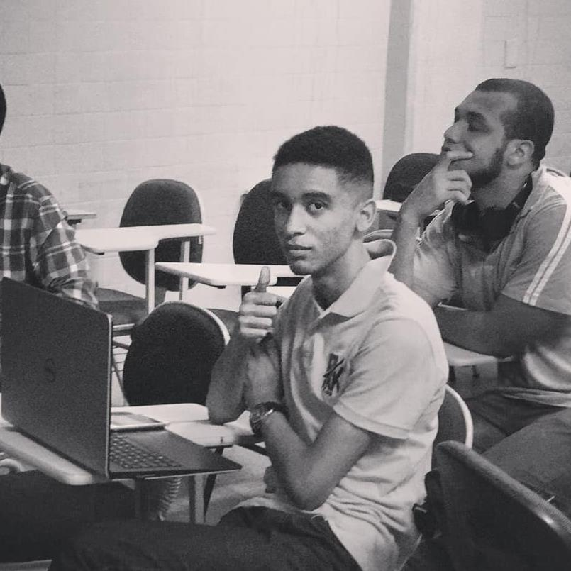

Clojure
Designing expressive, functional systems that are easy to evolve, with strong attention to domain modeling and operational simplicity.

Ariel ReisAI Product Engineer
I am Ariel Reis, an AI Product Engineer with deep knowledge across product engineering, backend architecture, data modeling, cloud infrastructure, search, and AI integrations.
Skills
Designing expressive, functional systems that are easy to evolve, with strong attention to domain modeling and operational simplicity.
Building resilient, observable, scale-ready services in mature backend ecosystems.
Temporal and immutable modeling for products that need history, auditability, and richer ways to read data.
Cloud architecture, deployment, and operations with security, cost, automation, and availability in mind.
Search, indexing, and data exploration for fast, relevant, and actionable product experiences.
Modern APIs and applications in the JVM ecosystem, with clear, typed, and productive code.
Knowledge
Strong understanding of LLM-based product patterns, evaluation, integrations, and the tradeoffs behind useful AI experiences.
Deep knowledge of APIs, domain modeling, JVM systems, observability, reliability, and long-term maintainability.
Practical experience with immutable data, ElasticSearch, AWS, and platform foundations that support careful product evolution.